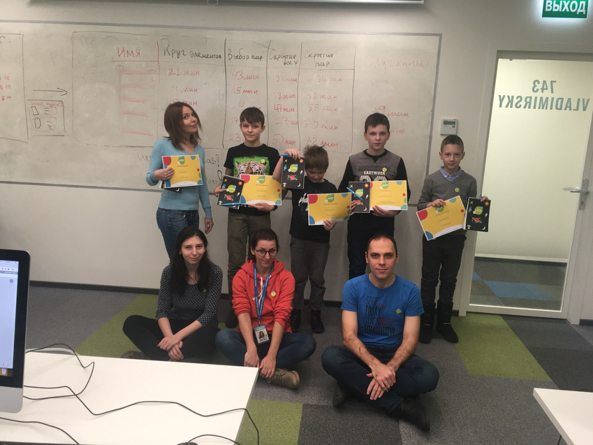

News
The pros and cons of restarting from scratch
2020-01-01 00:00
Anyone, who watches our progress long enough, can say that we restarted the development from scratch plenty of times.
Even before releasing "OGS Mahjong", we changed the underlying technology more than once. After that, we did it again several times, throwing away already completed features.. . .
On the way to durable applications
2019-08-05 00:00

This article describes our first durable application for desktop PCs: PSKOV static site generator.
Durability
A durable application is an application that functions without a single change on operating systems released in years 2010-2030. In other words, a durable application has backward compatibility of 10 years and has the stability to run for 10 years. Actually, PSKOV runs even under Windows 2000, so PSKOV has backward compatibility of 19 years.. . .
Defending availability
2019-04-16 00:00

In this article, we describe the beginning of our efforts to protect ourselves from third-party solutions.
Since day one of Opensource Game Studio project, we rely heavily on third-party solutions to help us achieve the goal of creating the best game development tools. To this date, we used forums, task trackers, mailing lists, social networks, code version control systems, hosting providers, compiler suites, libraries, and so on. Each third-party solution we used had its own lifespan.. . .
Teaching kids to program
2019-02-04 00:00

In this article, Michael shares his experience of teaching kids to program.
Here's what he covers:
- organization of the learning process
- learning plan
- memory game. . .
Year of rethinking
2019-01-01 0:01

It was a year of reimagining and rethinking. As some of you may remember, we started this project to make a game development tool. During the years, the idea evolved from one form to another, sometimes the changes were significant, other times we threw away all the code and started anew.. . .
Ideal games and game development tools
2018-11-19 00:00

In this article, we discuss how ideal video game and video game development tool look like, in our opinion.
Questions
As you know, the goals of Opensource Game Studio are:. . .
OGS Mahjong 2: Demo 2
2018-10-02 00:00

We are glad to announce the release of the second demonstration of OGS Mahjong 2. The purposes of this release were to refine our development techniques and build a solid cross-platform foundation.. . .
Examples and dependencies
2018-08-21 00:00

This article describes two new OpenSceneGraph cross-platform examples and the change in handling dependencies.
Examples of HTTP client and node selection
Once we finished working on the remote debugging example and reported its completion, we were surprised by the fact that secure HTTP connection between a debugged application and debug broker was only working in the web version of the example. Desktop and mobile versions only worked with insecure HTTP.. . .
Example-driven development
2018-06-27 00:00

This article explains how the third OpenSceneGraph cross-platform example opened our eyes to example-driven development.
2018-08 EDIT: the third example has been renamed to the fourth one due to the reasons described in the next article.. . .
Page 1 of 7